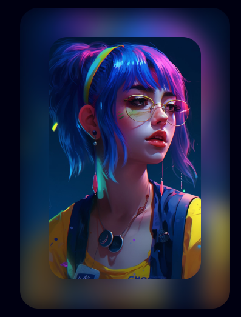
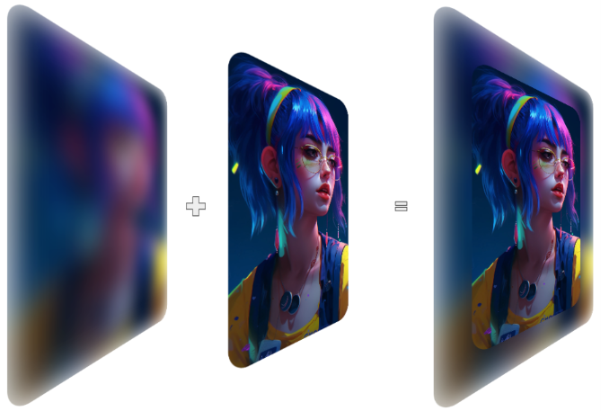
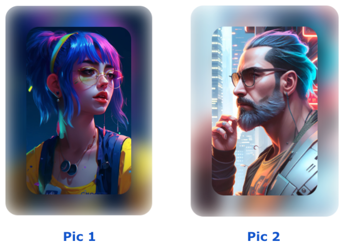
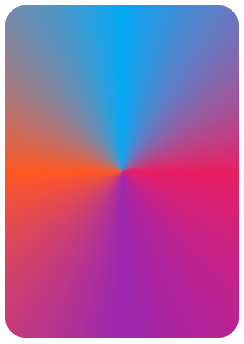
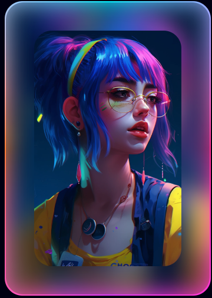
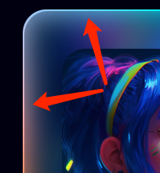
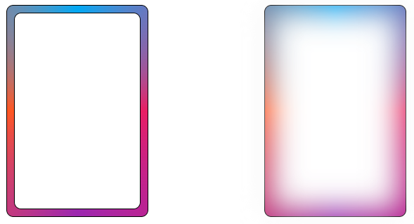
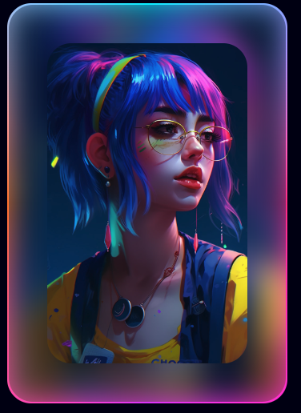
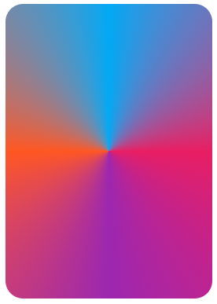
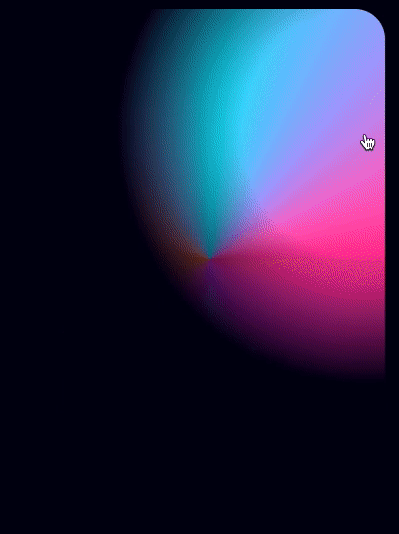

- 31 极具创意的鼠标交互动画
- 30 标准滚动条控制规范 scrollbar-color 和 scrollbar-width
- 29 类 ChatGpt 多行文本打字效果
- 28 神奇的卡片 Hover 效果与 Blur 的特性探究
- 27 渐变边框文字效果
- 26 巧妙使用多种方式实现单侧阴影
- 25 全尺寸的带圆角的渐变边框
- 24 开发中保证你用得到的 css 小技巧
- 23 您应该了解的 15 个有用的 CSS 属性
- 22 CSS 行元素的截断样式 box-decoration-break 属性
- 21 用 SASS 简化媒体查询
- 20 为什么你应该停止使用传统的 margin 和 padding 来设置 CSS 样式
- 19 sass 优化响应式布局代码
- 18 盘点 CSS 文本两端对齐的 N 种方式
- 17 如何修改滚动条的样式
- 16 CSS 模拟图片透明的棋盘背景
- 15 文本描边完美实现
- 14 你需要自定义 @property 而不是 CSS 变量的情况
- 13 从高度 0 过渡到自动高度
- 12 一些 css 语法解释
- 11 scss 日常用法
- 10 sass 指南
- 09 CSS 颜色设置透明度的新姿势
- 08 CSS 属性 appearance
- 07 CSS 动画性能优化
- 06 CSS 功能特性
- 05 CSS 中的 var() 函数
- 04 15 个你不知道的 CSS 属性
- 03 will-change
- 02 normalize.css 清除元素默认样式
- 01 纯 CSS 获取屏幕宽高
神奇的卡片 Hover 效果与 Blur 的特性探究
HaoTian · 2024-12-01 09:16:48
这个效果的几个难点：
- 鼠标移动的过程中，展示当前卡片边缘的 border 以及发光效果；
效果只出现在鼠标附近？这一块的实现方法就有很多种了，可以计算鼠标附近的范围，在范围内去实现的效果，但是这样成本太高了。
转换一下思维，其实也可以利用遮罩的思想。在一开始就已经实现好了整体效果，也就是渐变色的整个边框以及整体的内发光效果，通过遮罩的思想，让整个遮罩层跟随鼠标进行移动。
- 整体的效果需要适配鼠标的移动，跟随鼠标移动，进行效果的切换；
基于上述动图中，到目前为止，纯 CSS 在鼠标移动效果跟随上，是没法解决的，这里需要引入一定量的 Javascript 代码。
基于上述难点（1）（2），下面我们就一起看看如何一步一步实现这个效果。
搭建整个静态效果
首先，我们需要搭建整个静态效果。也就是在没任何 hover 的状态下的效果，如下所示：
由于，每张图背后的虚化图效果，应该是基于图片不同而千图千面，因此，不可能能够用一张背景图 Cover 所有情况。
并且，图片背后的虚化图的效果，需要与实际图片的颜色保持大致一致。
基于上述两点，我们很容易想到使用 filter: blur() 模糊来处理此类情况。
代码也比较简单：
<div></div>
:root {
--pic: url("https://oss.aiyuzhou8.com/2023/05/08-.jpg");
}
div {
position: relative;
margin: auto;
width: 350px;
height: 500px;
border-radius: 30px;
overflow: hidden;
&::before,
&::after {
content: "";
position: absolute;
background: var(--pic);
background-size: cover;
background-position: center;
border-radius: 30px;
}
&::before {
inset: 0;
filter: blur(20px);
}
&::after {
inset: 50px;
}
}
这里，我们用元素的一层伪元素实现原图，另外一层伪元素实现虚化后的图片：
这种好处是，背后的虚化图层，可以适配任意的不同图片：
实现渐变色边框
接下来，我们需要实现渐变色的边框效果。
这个需要借助 conic-gradient 实现。
我们需要借助另外一个 div 实现我们的效果：
<div></div>
div {
width: 350px;
height: 500px;
border-radius: 30px;
background: conic-gradient(#03a9f4, #e91e63, #9c27b0, #ff5722, #03a9f4);
}
这样，我们就得到了一个这样的图形：
把它叠加到我们上述的效果之上，让整个图形，稍微比上述虚化背景大一点点即可，如此一来，效果就变成了这样：
仔细看，图片带上了渐变色的边框。
等等，再仔细看！除了渐变色边框之外，当前的效果，居然还自带了内发光（内阴影）效果，真是歪打正着，这不正是我们需要实现的吗：
探究 filter: blur() 的透明效果
这是为何呢？原因在于，设置了 filter: blur() 的元素，会从边缘处向中心处，带有透明衰减的效果。
我们简单来做个实验：
<div></div>
<div></div>
div {
position: relative;
width: 200px;
height: 300px;
border-radius: 10px;
border: 1px solid #000;
background: conic-gradient(#03a9f4, #e91e63, #9c27b0, #ff5722, #03a9f4);
&::before {
content: "";
position: absolute;
inset: 10px;
border-radius: 10px;
background: #fff;
border: 1px solid #000;
}
}
我们设置了两个一模一样的 div，其中，元素本身设置了一个角向渐变背景。
接着，利用其伪元素，在元素中间相距边界 10px 的地方，设置一个背景为白色的元素。效果如下：
此时此刻，两个元素没有任何不一样。但是接下来，我们给第二个元素的伪元素，添加上一个 filter: blur() 高斯模糊效果：
div:nth-child(2) {
&::before {
filter: blur(20px);
}
}
此时，再看看效果：
在白色元素的边缘处，向内的方向，其实是有逐渐减弱的透明效果。
当然，由于高斯模糊还会产生向外扩散的效果，因此上述 DEMO 示意图看起来不是很清晰，我们可以通过多套一层容器，通过 overflow: hidden 阻止高斯模糊的向外扩散。
我们再调整一下布局：
<div class="g-father">
<div class="g-child"></div>
</div>
<div class="g-father">
<div class="g-child"></div>
</div>
.g-father {
position: relative;
width: 200px;
height: 300px;
border-radius: 10px;
border: 1px solid #000;
background: conic-gradient(#03a9f4, #e91e63, #9c27b0, #ff5722, #03a9f4);
.g-child {
position: absolute;
inset: 10px;
border-radius: 10px;
border: 1px solid #000;
overflow: hidden;
&::before {
content: "";
position: absolute;
inset: 0;
background: #fff;
border-radius: 10px;
}
}
}
.g-father:nth-child(2) {
.g-child::before {
filter: blur(20px);
}
}
此时，我们再看整个效果，设置了 filter: blur() 的元素，会从边缘处向中心处，带有透明衰减的效果就非常明显了：
完整的 DEMO，你可以戳这里：CodePen Demo -- filter: blur 透明效果示意
鼠标移动事件监听配合 mask，实现整体效果
好，到这里，我们已经成功得到了这么一个效果：
基于上述效果，我们最后要做的，就是最终实现这么个效果：
这里，我们会利用鼠标移动事件监听配合 mask 来实现。
由于我们上述的效果是分层实现的，其中边框和内发光层，其实是这么个背景效果：
我们要做的就是：
- 利用
radial-gradient()实现一个径向渐变 mask 遮罩； - 监听鼠标移动事件，移动 mask 遮罩的中心点；
- 可以通过多设置一层，实现 Hover 时背景角向渐变元素才出现，鼠标离开元素区域，背景角向渐变元素消失；
大致代码如下：
<div id="g-container">
<div id="g-img"></div>
</div>
:root {
--x: 0;
--y: 0;
}
#g-container {
position: relative;
width: 350px;
height: 500px;
border-radius: 30px;
}
#g-img {
position: absolute;
inset: 0px;
border-radius: 30px;
background: conic-gradient(#03a9f4, #e91e63, #9c27b0, #ff5722, #03a9f4);
mask: radial-gradient(
circle at var(--x) var(--y),
#000,
#000,
transparent,
transparent,
transparent
);
}
const container = document.getElementById("g-container");
const img = document.getElementById("g-img");
container.addEventListener("mousemove", (event) => {
img.style.visibility = "visible";
const target = event.target;
const rect = target.getBoundingClientRect();
var offsetX = event.clientX - rect.left;
var offsetY = event.clientY - rect.top;
var percentX = (Math.min(Math.max(offsetX / rect.width, 0), 1) * 100).toFixed(
2
);
var percentY = (
Math.min(Math.max(offsetY / rect.height, 0), 1) * 100
).toFixed(2);
console.log("X: " + percentX + "%");
console.log("Y: " + percentY + "%");
container.setAttribute("style", `--x: ${percentX}%;--y: ${percentY}%;`);
});
container.addEventListener("mouseout", (event) => {
img.style.visibility = "hidden";
});
在图形上方移动鼠标，我们可以得到这么一个效果：
好，将上述的前面两个图层也合并进来，这样，我们就最终完美的实现了我们想要的效果：

完整的代码散落在上方，就不重复贴影响阅读体验了，感兴趣的同学，可以戳这里获取完整 DEMO 效果及源码：